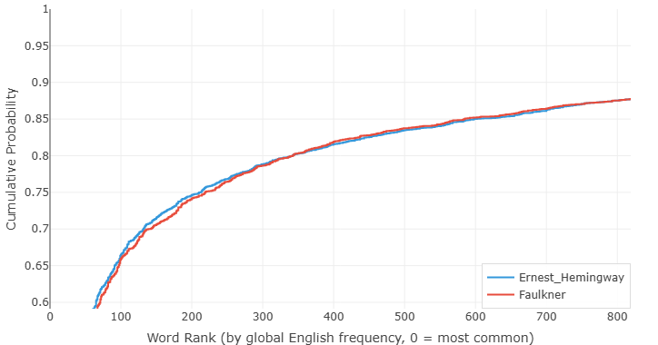

海明威 vs 福克納 — 數據到底說了什麼
隨便找個人問問，哪兩位作家最能代表英語散文的兩個極端，答案幾乎總是一樣的：厄尼斯特·海明威和威廉·福克納。
海明威：簡潔的大師。短句。樸素的詞。「冰山理論」——刪掉一切，讓未說出口的部分承載重量。用他自己的話說，他的文風是被《堪薩斯城星報》的風格手冊塑造出來的：「用短句。用簡短的開頭段落。用有力的英語。」
福克納：極繁主義者。句子在半頁紙上盤旋纏繞，從句套著從句，拒絕落地，直到思緒把自己耗盡。在《押沙龍，押沙龍！》中，一個句子長達1288個詞。評論家說他不可讀；他說這是必要的。意識流需要呼吸的空間。
所有人都「知道」這兩位是對立面。但如果你不再依賴文學界的口碑，而是真正去測量其中的差異呢？我們把兩位作家的代表性文本分別輸入寫作風格分析器。結果既完全在預料之中——又令人大吃一驚。
圖一：句子長度的鴻溝

這張圖展示的是句子長度的累積分佈。X 軸是句子長度（以詞數計），Y 軸表示有多少比例的句子落在該長度或更短。曲線快速上升、緊貼左邊緣，意味著短句佔主導。曲線向右拖沓，則意味著作者喜歡把句子拉長。
海明威的曲線是那條快速上升的——兩條線之間的差距觸目驚心。
在 17 個詞這個節點上，海明威已經覆蓋了80% 的句子。而福克納，同樣的閾值只覆蓋了略多於 60%。想想看：海明威五句中有四句在 18 個詞之前就收尾了。福克納需要幾乎兩倍的篇幅才能覆蓋同樣的比例。
但真正讓人瞠目結舌的是圖表的右端。看 50 個詞那個位置。到這個點，海明威基本已經窮盡——他寫的幾乎每一個句子都已經被統計在內。而福克納的曲線呢，在 50 個詞處只達到了92%。這意味著福克納有 8% 的句子超過了 50 個詞。
這裡有一個關鍵細節：我們的句子切分器刻意傾向於碎片化。為了研究節奏，我們會按逗號切分——不僅是句號、感嘆號和問號。你在圖表上看到的單位，並不是語法教科書意義上的完整句子，而是呼吸單元——讀者在兩次停頓之間所處理的那一組詞。
所以當圖表顯示福克納有 8% 的「句子」超過 50 個詞時，它真正的含義是：你在讀福克納時，大約每呼吸十二次，就有一次會在不暫停的情況下連續處理超過五十個詞。如果你在朗讀，這對肺活量是相當大的考驗。相比之下，海明威幾乎每次停頓都給你喘息的機會。
這不只是風格癖好，這是對「閱讀應該是什麼感覺」的根本不同的理解。海明威想讓你快速前進，感受詞與詞之間的沉默。福克納想讓你沉入其中，迷失方向，被意識的洪流裹挾，直到忘記自己從哪裡出發。數據不會說謊：兩個人都精確地得到了他們想要的效果。
圖二：詞彙的驚喜

看到句子長度曲線差這麼多，你會自然而然地預期詞彙頻率曲線也同樣天差地別，對吧？一個用樸素的語言，一個以晦澀著稱——他們的詞彙曲線應該是完全不同的世界。
不是的。它們幾乎一模一樣。
這張圖繪製的是累積詞頻——文本中落入英語最常用 N 個詞（基於 COCA 語料庫的 4380 個詞排名）的所有詞所佔的比例。曲線緊貼左邊緣，意味著作者嚴重依賴常見詞彙。曲線滯後，則意味著作者更頻繁地使用生僻詞。
在頭 300 個最常用的詞中，海明威使用高頻詞的比例略高一些——他的曲線上升得稍快一點。這符合我們對海明威的印象：「用有力的英語」——常見、強硬、具體的詞。
但在過了頭 300 個詞之後呢？兩條曲線幾乎完全重疊。穿過中頻詞區域，穿過更生僻的詞彙，一直到長尾——海明威和福克納從同一口井裡打水。他們的詞彙範圍、他們對生僻詞的偏好、他們在熟悉與陌生之間拿捏的平衡——全都驚人地相似。
這真的令人驚訝。這兩位作家以彼此對立而聞名。一位在每本「寫作要清晰」的教材裡被奉為典範；另一位則是艱澀文風的代言人。然而，在詞彙層面，他們幾乎在用同一副牌打牌。區別不在於他們用哪些詞——而在於他們如何排列這些詞。
這也暗示著某種更深層的東西。詞頻曲線往往反映作者的文脈背景：教育水準、關注的話題、所處的智識環境。詞彙特徵幾乎一致的兩位作家，大概率共享著同一個世界。他們讀相似的書，思考相似的問題，屬於同一個時代。
於是我們查了一下。
| 出生 | 去世 | |
|---|---|---|
| 威廉·福克納 | 1897年9月25日 | 1962年7月6日 |
| 厄尼斯特·海明威 | 1899年7月21日 | 1961年7月2日 |
他們出生相差不到兩年。去世日期僅隔四天。
福克納生於 1897 年，海明威生於 1899 年。福克納於 1962 年 7 月 6 日去世；海明威則恰好早一年零四天，於 1961 年 7 月 2 日去世。他們經歷了同樣的戰爭，在同一個文學市場中打拚，在同一個巴黎喝酒，並相隔五年先後獲得了諾貝爾文學獎（海明威 1954 年，福克納 1949 年——但福克納的獎項在 1950 年才公佈）。
演算法對這些一無所知。它不知道海明威和福克納是誰，不知道他們的出生日期，不知道他們的聲譽，也不知道他們的諾貝爾獎頒獎詞。它看到的只是兩組句子長度陣列和兩張詞頻表。而僅憑這些數字，它就推斷出：這兩個人大概來自同一個世界。
它說對了。
這對寫作意味著什麼
海明威與福克納的對比，教會我們一件關於「風格」本質的重要事情。
我們傾向於把風格和詞彙混為一談。如果有人用生僻詞，我們就說他的「風格晦澀」；如果有人用樸素的語言，我們就稱之為「簡單」。但數據表明這種看法是錯的——至少是不完整的。海明威和福克納用的基本是同一套詞彙。讓他們不同的是節奏：句子有多長，停頓如何分佈，作者如何管理讀者的呼吸。
換句話說，風格更像是建築而非裝飾。它不是牆漆的顏色，而是戶型圖。
這正是寫作風格分析器旨在揭示的那種洞見。當你看自己的句子長度和詞頻圖表時，你看到的不僅是抽象的數字——你在看自己寫作節奏的指紋。如果你把你的圖表和你崇拜的某位作家的圖表做對比，你可以測量差距。不是用模糊的、印象式的語言（「他們的文字更流暢」），而是用精確的、可量化的語言（「在 20 個詞的節點，他們覆蓋了 85% 的句子，而我只有 60%」）。
工具不會告訴你哪種節奏是「正確的」，因為沒有正確的節奏。海明威和福克納證明了，你可以從句長譜系的兩端出發，都拿到諾貝爾獎。但工具會告訴你你實際上在做什麼——以及這是否符合你的本意。
也許你想寫得像海明威，也許你想寫得像福克納。也許你像我們大多數人一樣，想在兩者之間找到某個位置，擁有根據場合自由調節的能力。無論如何，第一步都是相同的：了解你的數據。